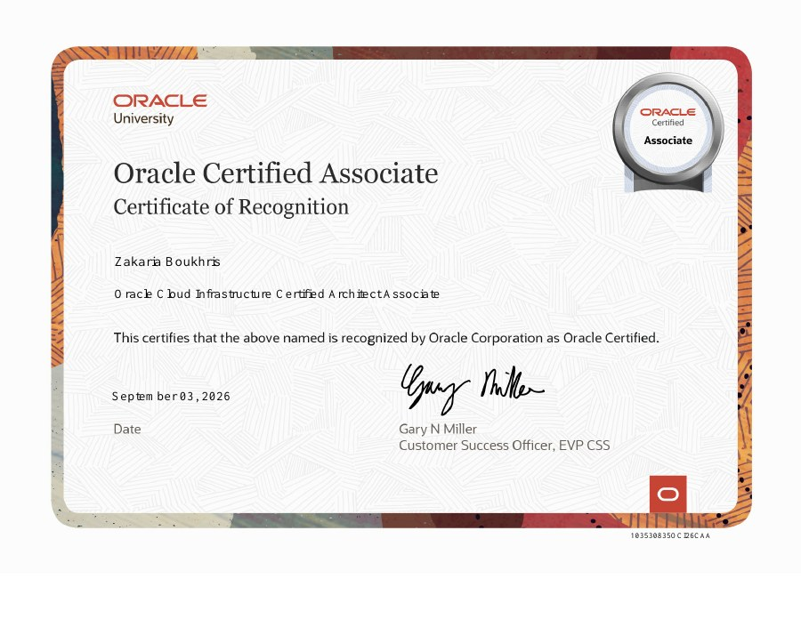
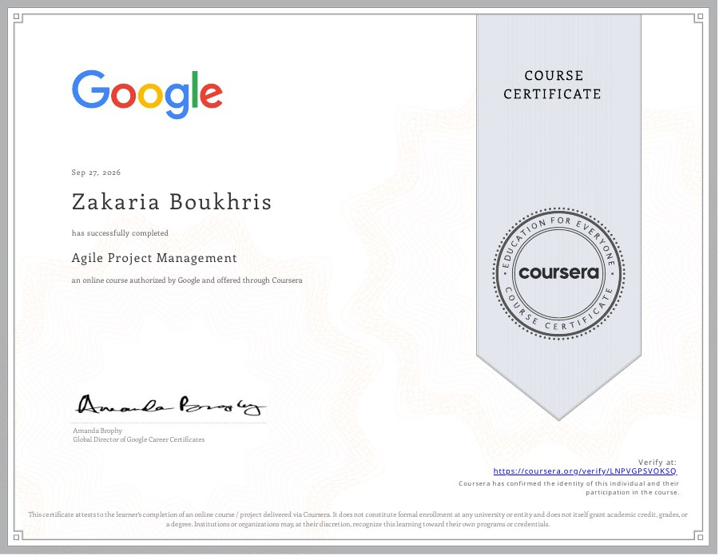
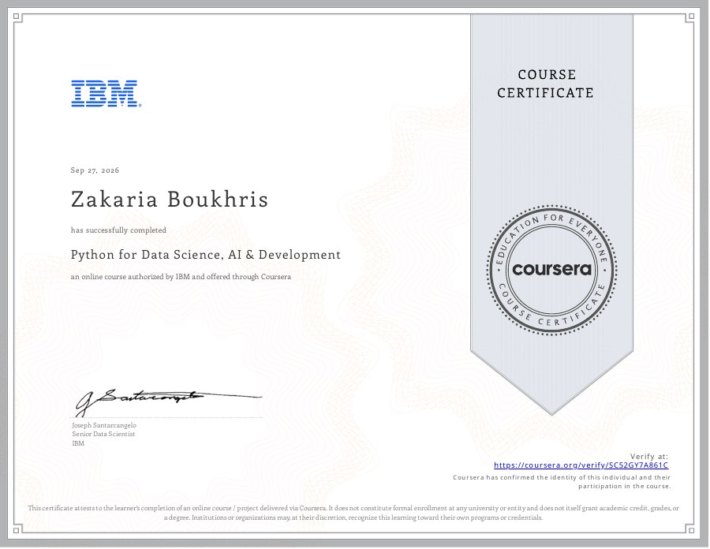
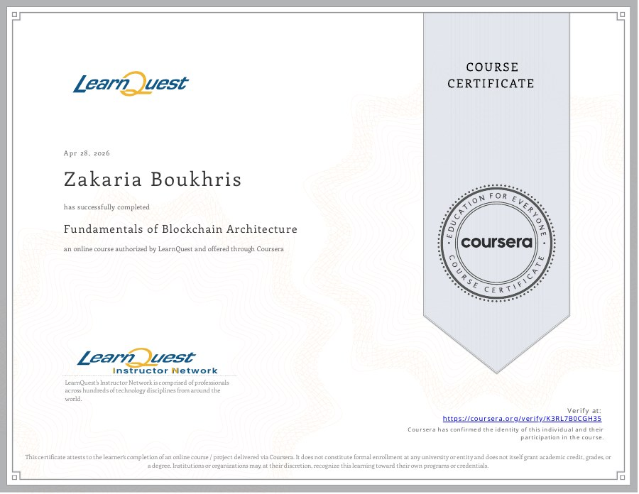
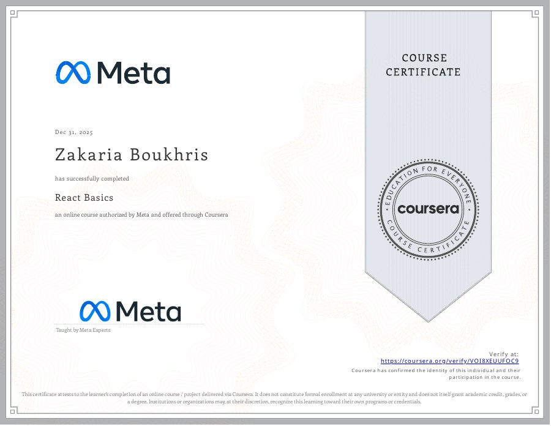
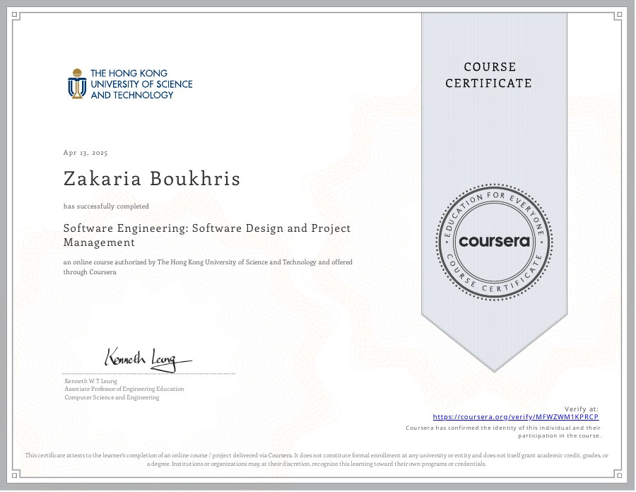
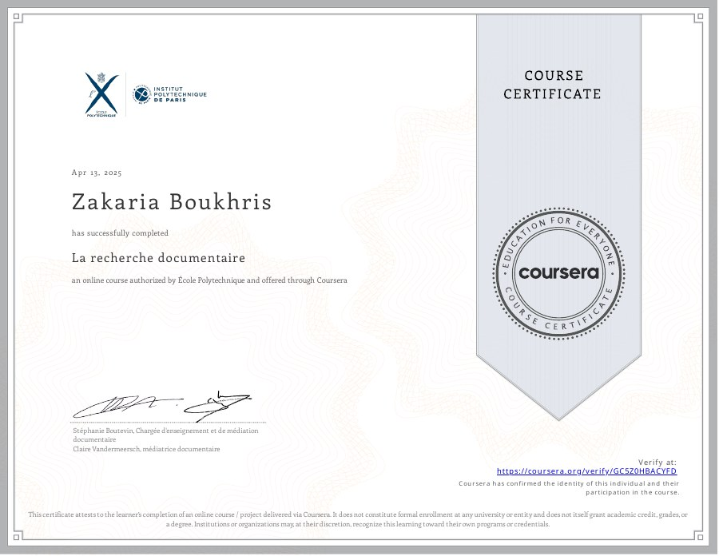
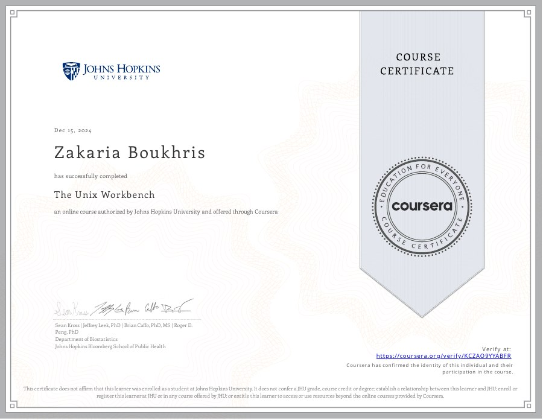
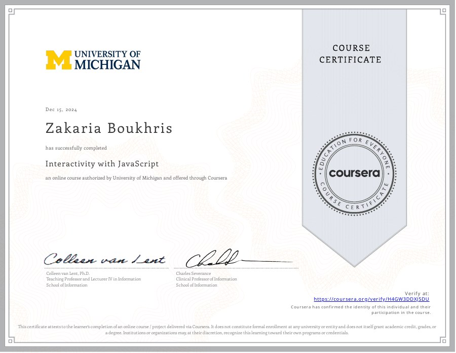
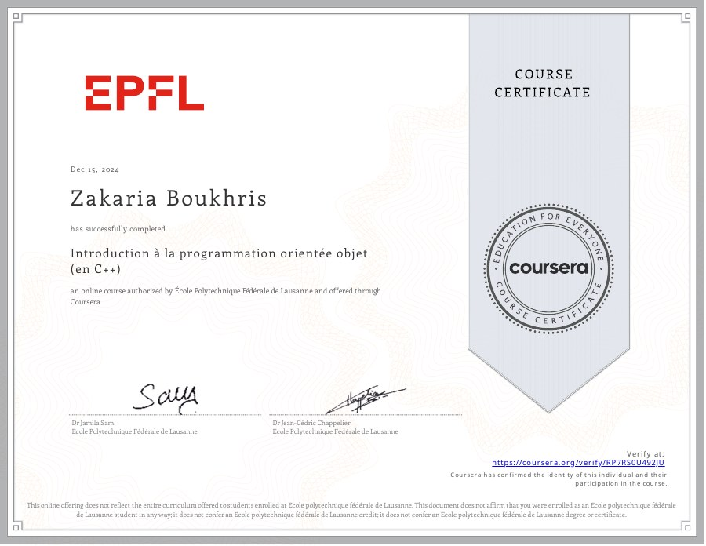

Détecter & analyser
Cybersécurité
Collecte des journaux, règles de détection et validation des réponses aux incidents dans un laboratoire isolé.
Wazuh · Suricata · MITRE ATT&CK · Burp Suite
CYBERSÉCURITÉ · SYSTÈMES · DEVSECOPS
Élève ingénieur — Cybersécurité, systèmes & DevSecOps
5e année à l’EMSI · Détecter, analyser, sécuriser.
01 / À PROPOS
Comprendre un système. Construire une solution. Apprendre à la protéger.
Je me spécialise en cybersécurité et en infrastructure réseau à l’EMSI. Mon stage à la Justice de Rabat m’a permis de travailler sur la collecte de journaux, la détection et la réponse aux incidents avec Wazuh. Mon projet DevSecOps et mes bases en développement complètent cette orientation.
02 / COMPÉTENCES
Détecter & analyser
Collecte des journaux, règles de détection et validation des réponses aux incidents dans un laboratoire isolé.
Wazuh · Suricata · MITRE ATT&CK · Burp Suite
Connecter & automatiser
Comprendre les environnements d’exécution et intégrer des contrôles de sécurité dans la chaîne de livraison.
Linux / UNIX · Docker · GitHub Actions · Trivy · Git
Modéliser & développer
Structurer les données, les services et les interfaces pour répondre à un besoin métier.
Python / Django · Java / JDBC · C# / .NET · SQL
03 / EXPÉRIENCES
2026 · 1 mois et demi
Rabat, MarocDirection provinciale de la Justice
Déploiement d’une infrastructure SIEM et validation de réponses aux incidents dans un laboratoire isolé.
Wazuh · Suricata · Linux / Windows · VirtualBox
2025
Rabat, MarocHuawei
Conception d’une application web interne de gestion du matériel, en binôme avec Walid Salhi.
Python · Django · HTML / CSS · JavaScript
04 / PROJETS SÉLECTIONNÉS
Deux projets au cœur de mon orientation : détection des incidents et sécurité de la chaîne de livraison.
01 / Stage PFA · 2026
Centraliser les journaux, détecter les incidents et valider la réponse automatisée.
Wazuh · Suricata · Linux · Windows · VirtualBox · Active Response
Stage PFA d’un mois et demi à la Direction provinciale de la Justice de Rabat, en 2026. Déploiement d’un laboratoire isolé de cinq machines virtuelles : Wazuh, Suricata, Linux/DVWA, Windows et Kali.
Cinq scénarios testés : force brute SSH et RDP, scan Nmap, injection SQL et XSS. Quatre réponses automatisées validées ; Nmap reste limité à la détection.
Le dépôt présente l’étude de cas et des captures réelles du rapport. Ces observations concernent le laboratoire, sans garantie de performance en production.
02 / Projet en binôme
Sécuriser la livraison d’une application Django, du code à l’image Docker.
GitHub Actions · Docker · Gitleaks · Semgrep · Bandit · Checkov · Trivy · GHCR
Réalisé en binôme avec Walid Salhi. Le pipeline automatise la recherche de secrets, l’analyse du code et de l’infrastructure, puis le contrôle des vulnérabilités de l’image Docker.
Les vulnérabilités HIGH/CRITICAL non corrigées bloquent la publication sur GHCR. Les manifestes Kubernetes et les politiques Kyverno préparent l’exécution ; le workflow ne réalise pas de déploiement automatique.
Ce dépôt contient également l’application de gestion du matériel présentée dans ce portfolio.
DÉVELOPPEMENT
Concevoir des applications pour mieux comprendre les systèmes à protéger.
03 / Stage Huawei · 2025
Une application interne pour organiser les équipements, les demandes et les stocks.
Python · Django · SQLite · HTML · CSS · JavaScript
Application Django réalisée avec Walid Salhi pendant le stage Huawei à Rabat en 2025 : catalogue, demandes de matériel, validation et suivi des stocks. Le code partage le dépôt du pipeline DevSecOps.
04 / PFA · Projet en binôme
Relier réservation, commande et facturation dans une application métier.
Python · Django · HTML · CSS · JavaScript
Projet de fin d’année réalisé avec Hamza Moubtassim : réservations, commandes et facturation avec Django. Le code et l’installation locale sont disponibles sur GitHub ; le README précise les écrans restant à compléter.
05 / Projet d’équipe
Une architecture Java modulaire pour les opérations d’un cabinet dentaire.
Java · JDBC · MySQL · Lombok · UML
Projet d’équipe à l’EMSI en Java natif : services métier et dépôts de données avec JDBC et MySQL. La répartition individuelle des modules n’est pas précisée. Aucun dépôt public ni démonstration exécutable disponible.
06 / Code disponible
Publier des cours, gérer les inscriptions et suivre la progression des apprenants.
C# · .NET 8 · ASP.NET Core MVC · Identity · Entity Framework Core · SQL Server
Application C# / ASP.NET Core MVC : cours, inscriptions et progression, avec rôles étudiant, formateur et administrateur. Identity gère les comptes ; Entity Framework Core accède à SQL Server. L’interface des quiz reste à compléter.
05 / FORMATION
2022 — 2027
École Marocaine des Sciences de l’Ingénieur
Cycle ingénieur en informatique. Actuellement en 5e année, avec une spécialisation en cybersécurité et infrastructure réseau.
2019 — 2022
Baccalauréat · Lycée Scientifique Hassan
06 / CERTIFICATIONS
11 · ORACLE & COURSERA

Oracle ·
Oracle University
Consulter le certificat
Coursera ·

Coursera ·
IBM
Consulter le certificat
Coursera ·
LearnQuest
Consulter le certificat
Coursera ·
Meta
Consulter le certificatCoursera ·
Meta
Consulter le certificat
Coursera ·
The Hong Kong University of Science and Technology
Consulter le certificat
Coursera ·
École Polytechnique
Consulter le certificat
Coursera ·
Johns Hopkins University
Consulter le certificat
Coursera ·
University of Michigan
Consulter le certificat
Coursera ·
École Polytechnique Fédérale de Lausanne
Consulter le certificat07 / ET LA SUITE ?
Un projet, une idée, un échange.
Échangeons sur vos projets en cybersécurité, systèmes et DevSecOps.
boukhris.zakaria.dev@gmail.com